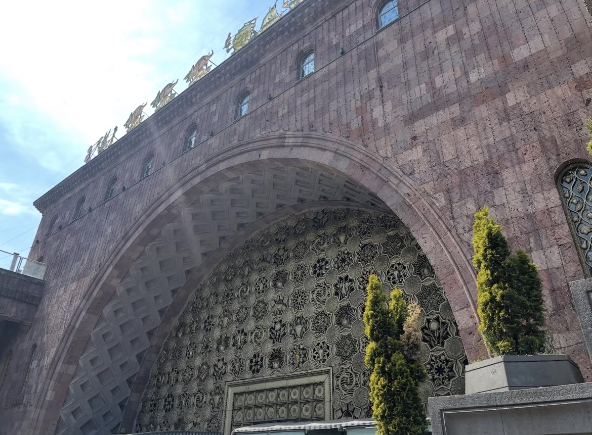
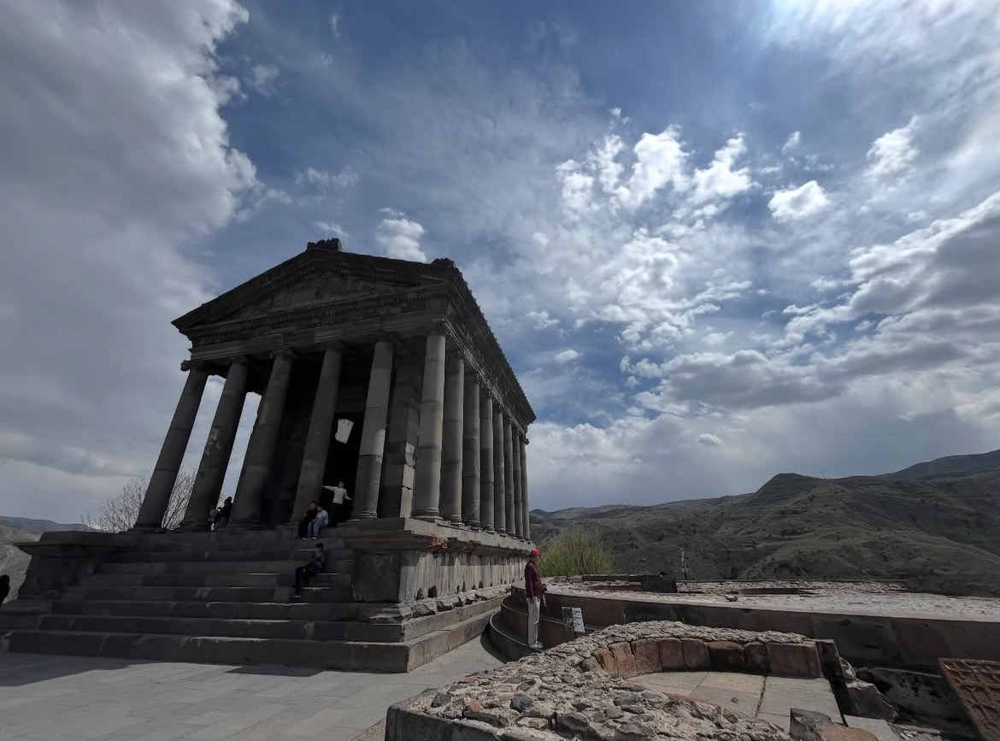
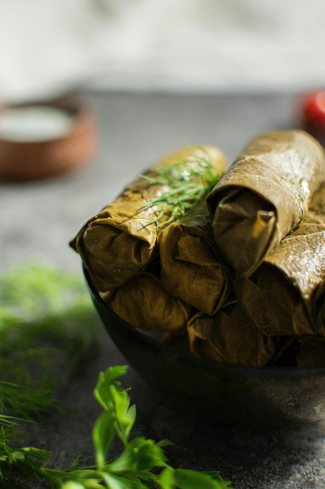

Armenia was one of those countries that kept popping up on our list. Every time we'd plan our next trip, Hannah and I would look at each other and say "we need to go to Armenia." So when we were mapping out our backpacking route last year from Rome to Cyprus, we made sure Yerevan was right in the middle. Best decision we made on that entire trip.
After visiting 49 countries over four years, we've gotten pretty good at spotting the difference between somewhere that's genuinely amazing versus somewhere that just photographs well for Instagram. Armenia is absolutely the former. This country is a proper hidden gem, and I genuinely don't understand why more people aren't talking about it.
The country is stunning, absolutely packed with history and archaeology, ridiculously cheap, and the people are genuinely welcoming. We're already planning to go back, which says a lot considering how many places we still want to tick off our list.
Why Armenia Surprised Us
Even though we'd wanted to visit for ages, we still weren't fully prepared for how much there is to see and do. Hannah did most of the research (she's the planner, I just take the photos), but we both kept discovering new places and experiences throughout the trip.
The country has this incredible mix of ancient temples, medieval monasteries, dramatic mountain scenery, and a capital city that's way more interesting than we expected. Plus, everything costs basically nothing compared to Europe, which is always a win when you're trying to save for a house.
Getting from the Airport to Yerevan
We flew in from Rome and landed at Zvartnots International Airport (which is gorgeous, by the way). We took the airport express bus (Route 201) to get to the city center, which cost just 300 AMD (about 60p) per person. The bus runs every 30 minutes from 7am to 10pm and takes about 30-40 minutes to reach the center. It's ridiculously cheap and drops you right near Republic Square.
If you land outside those hours or prefer more comfort, taxis are still affordable at around 3,000-5,000 AMD (£6-10) for the ride to the center.
Yerevan: The Capital We Weren't Expecting

Yerevan itself surprised us. It's this really walkable city with wide boulevards, interesting Soviet-era architecture mixed with older buildings, and this massive cascade (a giant staircase covered in art installations) that you can climb for views over the whole city.
The vibe is relaxed, people are friendly, and there's way more going on than we expected. Cafes everywhere, interesting museums, good nightlife if that's your thing. It felt like a city that's still relatively undiscovered by mass tourism, which made it even better.
Where We Stayed:
We stayed at the Horizon Hotel for two nights and paid £54.29 total (about £27 per night). The location was decent for exploring the city center, and for the price, it was excellent value. Nothing fancy, but clean, comfortable, and exactly what we needed for a couple of nights while we explored Yerevan.
Garni Temple: Roman (or Greek?) Architecture in Armenia

One of the highlights of our trip was visiting Garni Temple, which is about 30km outside Yerevan. We paid £9 for a cab to get there, which felt like an absolute bargain for a private ride.
The temple itself is fascinating because no one's actually 100% sure whether it was built by the Romans or the Greeks. It's this perfectly preserved pagan temple dedicated to the sun god Mihr, with these stunning Greco-Roman columns that look like they belong in Athens, not the Caucasus mountains.
What really struck me (and reminded me of the Roman Baths back in Bath, UK) was this area near the temple that had these bath-like structures. The whole complex has this ancient spa vibe to it, with geometric mosaics and what used to be bathing facilities. Standing there taking photos, it genuinely felt like we could have been in Italy or Greece, not Armenia.
"Standing at Garni Temple, it genuinely felt like we could have been in Italy or Greece, not Armenia."
Tours and Day Trips from Yerevan
We just took a regular taxi to Garni, but if you want a proper guided experience, GetYourGuide has loads of options:
- Garni Temple and Geghard Monastery Tour - This is the classic combination tour that most people do. Garni Temple plus the stunning medieval Geghard Monastery (which is literally carved into a cliff), usually about 4-5 hours total.
- Lake Sevan and Dilijan Full-Day Tour - Lake Sevan is one of the largest high-altitude freshwater lakes in the world and looks absolutely unreal. Dilijan is often called "Armenian Switzerland" because of how green and forested it is.
- Khor Virap, Noravank and Areni Winery Tour - If you want monasteries with mountain backdrops (including views of Mount Ararat), plus some wine tasting, this is the one. Armenia has a proper ancient wine-making tradition.
The Food: Cheap, Delicious, and Proper Traditional

Armenian food is excellent, and more importantly, it costs basically nothing. We tried a decent range of traditional dishes while we were there, and everything was brilliant.
What You Need to Try:
- Khorovats (Armenian BBQ) - This is the big one. It's Armenia's national dish. Skewered chunks of marinated pork, lamb, or beef grilled over charcoal. A portion for 2-3 people typically costs 1,500-3,000 AMD (£3-6).
- Dolma - As we discovered, these are grape leaves stuffed with minced meat, rice, and herbs. Armenia's version is particularly meaty compared to other countries' dolma, and it's usually served with matsun (Armenian yogurt) mixed with garlic.
- Lavash - This is the traditional Armenian flatbread, and it's everywhere. It's a UNESCO-recognized cultural heritage thing, which shows how seriously Armenians take their bread.
- Gata - For dessert, try gata. It's a sweet pastry filled with butter, sugar, and flour, sometimes with nuts or vanilla.
The Friendly Street Dogs of Yerevan
One thing that really struck us about Yerevan was the number of dogs running around the city. Before you worry, these aren't aggressive or dangerous. They're part of a really well-managed program run by the city's Animal Care Center.
You'll notice most of the dogs have colored ear tags. These tags indicate that the dog has been sterilized, vaccinated against rabies, and returned to the area. They're super calm and approachable. If you're a dog person like us, you'll love this aspect of Yerevan.
Armenia Budget Breakdown: What It Actually Cost
Flights & Transport
- Rome to Yerevan: £65.99 for both
- Airport bus: 300 AMD each (£0.60)
- Taxi to Garni: £9
Daily Expenses
- Horizon Hotel: £54.29 (2 nights)
- Avg. Meal: 4,000 AMD (£8)
- Total (2 days, excl. flights): ~£110 for two
Final Thoughts: Why Armenia is a Hidden Gem
After 49 countries, we can usually tell pretty quickly whether somewhere lives up to the hype or not. Armenia absolutely does, but the thing is, most people don't even have it on their radar.
The combination of ancient history, stunning natural scenery, genuinely interesting culture, friendly people (and dogs!), and ridiculously cheap prices makes it one of the best value destinations we've visited.
Would we go back? 100%. If you're looking for somewhere off the beaten path that won't destroy your budget, Armenia should be way higher on your list than it probably is right now.